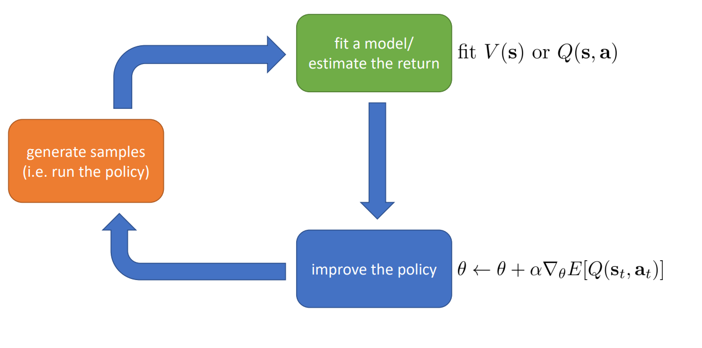

import gymnasium as gymenv = gym.make("CartPole-v1")observation, info = env.reset()for _ inrange(1000): action = env.action_space.sample() # agent policy that uses the observation and info observation, reward, terminated, truncated, info = env.step(action)if terminated or truncated: observation, info = env.reset()env.close()
Observations/States Space
State \(s\): is a complete description of the state of the world (there is no hidden information). In a fully observed environment.
Observation \(o\): is a partial description of the state. In a partially observed environment.
Observations/States Space
There is a differentiation to make between observation and state:
States Space - code example
The state space of the CartPole-v1 environment is represented by a 4-dimensional vector:
import gymnasium as gymenv = gym.make("CartPole-v1")print("The State Space is: ", env.observation_space)print("Sample observation", env.observation_space.sample()) # Get a random observation
The State Space is: Box([-4.8000002e+00 -3.4028235e+38 -4.1887903e-01 -3.4028235e+38], [4.8000002e+00 3.4028235e+38 4.1887903e-01 3.4028235e+38], (4,), float32)
Sample observation [ 2.4335556e+00 -7.9915350e+36 -2.4241246e-01 -2.1394906e+38]
Action Space
Different environments allow different kinds of actions.
Discrete action spaces, where only a finite number of moves are available to the agent.
Continuous spaces, where actions are real-valued vectors.
Action Space - code example
The action space is discrete, consisting of two possible actions:
print("The State Space is: ", env.action_space)print("Sample observation", env.action_space.sample()) # Get a randoma action
The State Space is: Discrete(2)
Sample observation 0
Markov Property in RL
The Markov Property implies that our agent needs only the current state to decide what action to take and not the history of all the states and actions they took before.
Trajectories are also frequently called episodes or rollouts.
Trajectories - code example
num_steps =10trajectory = []state, _ =# Initial state# Sample trajectoryfor _ inrange(num_steps):# Sample a random action# Act in the enviroment# Store the transition state = next_state # Update the stateif terminated or truncated:break# Apply the action to the environment# Print the trajectoryfor t, transition inenumerate(trajectory): state, action, reward, next_state = transitionprint(f"Step {t}: State: {state}, Action: {action}, Reward: {reward}, Next State: {next_state}")
Trajectories - code example
num_steps =10trajectory = []state, _ = env.reset()# Sample trajectoryfor _ inrange(num_steps): action = env.action_space.sample() # Sample a random action next_state, reward, terminated, truncated, info = env.step(action) trajectory.append((state, action, reward, next_state)) # Store the transition state = next_state # Update the stateif terminated or truncated:break# Apply the action to the environment# Print the trajectoryfor t, transition inenumerate(trajectory): state, action, reward, next_state = transitionprint(f"Step {t}: State: {state}, Action: {action}, Reward: {reward}, Next State: {next_state}")
A policy is a rule used by an agent to decide what actions to take.
In deep RL, we deal with parameterized policies: policies whose outputs are computable functions that depend on a set of parameters (eg the weights and biases of a neural network) which we can adjust to change the behavior via some optimization algorithm.
class Policy(nn.Module):def__init__(self, s_size, a_size, h_size):super(Policy, self).__init__()self.fc1 = nn.Linear(s_size, h_size)self.fc2 = nn.Linear(h_size, a_size)self.log_std = nn.Parameter(torch.zeros(a_size)) # Log standard deviationdef forward(self, x): x = F.relu(self.fc1(x)) mu =self.fc2(x) std = torch.exp(self.log_std) # Standard deviationreturn mu, stdpolicy = Policy(s_size, a_size, h_size)# Forward pass through the policy to get mean and standard deviation of action distributionmu, std = policy(state.unsqueeze(0)) # add batch dimensionm = Normal(mu, std)action = m.sample()# Calculate the log probability of the sampled actionlog_prob = m.log_prob(action).sum(dim=-1)
Reward and Return
The reward function R is critically important in reinforcement learning. It depends on the current state of the world, the action just taken, and the next state of the world:
The reward is fundamental in RL because it’s the only feedback for the agent. Thanks to it, our agent knows if the action taken was good or not.
Finite-Horizon Return
Sum of rewards obtained in a fixed window of steps:
The cumulative reward equals the sum of all rewards in the sequence
Infinite-Horizon Return
Sum of all rewards ever obtained by the agent, but discounted by how far off in the future they’re obtained:
Discounted expected cumulative reward
The Discount Factor
The discount factor \(\gamma \in (0,1)\) is both intuitively appealing and mathematically convenient.
On an intuitive level: cash now is better than cash later.
Mathematically: an infinite-horizon sum of rewards may not converge to a finite value, and is hard to deal with in equations. But with a discount factor and under reasonable conditions, the infinite sum converges.
The RL Problem
The goal in RL is to select a policy which maximizes expected return when the agent acts according to it.
Let’s suppose that both the environment transitions and the policy are stochastic. In this case, the probability of a T -step trajectory is:
In this case, we have a starting point and an ending point (a terminal state). This creates an episode: a list of States, Actions, Rewards, and new States.
Beginning of a new episode.
Continuing tasks
These are tasks that continue forever (no terminal state). In this case, the agent must learn how to choose the best actions and simultaneously interact with the environment.
The Anatomy of a RL Algorithm
The anatomy of a reinforcement learning algorithm
A Taxonomy of RL Algorithms
A non-exhaustive, but useful taxonomy of algorithms in modern RL
Model-Free vs Model-Based RL
One of the most important branching points in an RL algorithm is the question of whether the agent has access to (or learns) a model of the environment.
By a model of the environment, we mean a function which predicts state transitions and rewards.
Algorithms which use a model are called model-based methods, and those that don’t are called model-free.
Model-Based RL
Model-Based RL - Improve the Policy
Pure Planning:
The most basic approach never explicitly represents the policy, and instead, uses pure planning techniques
Model-Based RL - Improve the Policy
Expert Iteration:
A straightforward follow-on to pure planning involves using and learning an explicit representation of the policy, \(\pi_{\theta}(a|s)\).
The agent uses a planning algorithm (like Monte Carlo Tree Search) in the model, generating candidate actions for the plan by sampling from its current policy.
The planning algorithm produces an action which is better than what the policy alone would have produced, hence it is an “expert” relative to the policy.
Model-Based RL - Improve the Policy
Data Augmentation for Model-Free Methods:
Augment real experiences and use a model-free RL algorithm to train a policy.
Model-Free - Policy Based
Model-Free - Value Based

Exploration/Exploitation Trade-Off
Exploration is trying random actions in order to find more information about the environment.
Exploitation is exploiting known information to maximize the reward.
Why so many RL algorithms?
Different tradeoffs - Sample efficiency, Stability & ease of use
Different assumptions - Stochastic or deterministic? Continuous or discrete? Episodic or infinite horizon?
Different things are easy or hard in different settings - Easier to represent the policy? Easier to represent the model?
Sample Efficiency
How many samples do we need to get a good policy?
Off policy: able to improve the policy without generating new samples from that policy
On policy: each time the policy is changed, even a little bit, we need to generate new samples